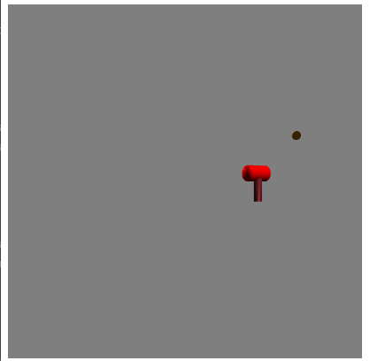
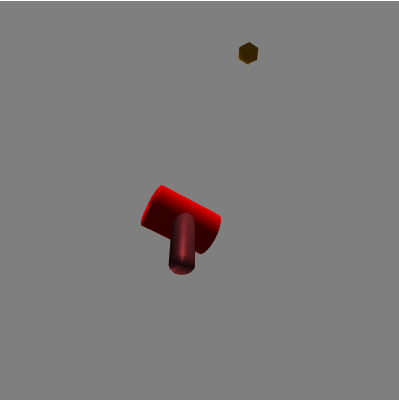
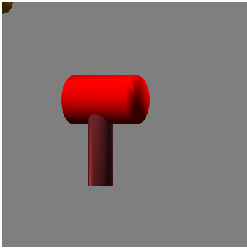
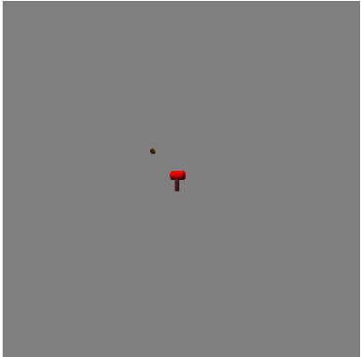

<-Back to main page
Camera control
Ruiyang Liu, Rliu60@ucsc.edu
Project Overview
In this programing assignment, I will create a camera based on the last assignment's model. User can
control the camera to see any angle of the object.
User Guide
 |
 |
Part 1: Camera control(available keyboard operations)
- The default is playing the camera animation, you can uncheck the animation box to stop it.
- Press corresponding key on keyboard for each operation:
- "w": move forward "s": move backward
- "a": move leftward "d": move rightward
- "q": pan left "e": pan right
- "c": tilt up "z": tilt down
- "o": switch to orthographic "p": switch to perspective
Part 2: Camera movement route
- For example, the right picture above. You wants to move the camera from original position to the
object's front-up posistion. You need tilt the camera up, then move forward. When the camera arrive
the posistion, tilt the camera down.
Part 3: Camera zoom and Animation
- Using the "Animation" checkbox to perform or stop animation. Default is Animation ON.
- Animation route is a cubic curve that camera revolves around the object along y-axis.
- Using "zoom out" slider to control the zoom.
Part 4: Lighting inherited from assignment 3
- The default has two light sources, one point light one directional light.
- If the point light is too far away from object, the specular light may be vague and small. Try to decrease the
specular light factor. Smaller number of that value, brighter the light is.
- For the specific lighting instructions, check the old_feature link above. But I think the light operation interface is clear :)
- Base code credit to Lucas:)
NOTICE: You can switch camera type (orthographic/perspective) with keyboard. Fahim said we don't need to
implement operations to modify orthographic camera(near/far/bound). Though, you can change near/far point of orthographic camera
in camera.js
Example output
1)Animation stopped, and moved the camera away and left to the object.
Operation Sequence: A -> S (press multiply times)

2)Animation stopped, and moved the camera to the object's front-below.
Operation Sequence: Z -> W -> C (press multiply times)

3)Animation stopped, orthographic camera.
Operation Sequence: O (press one time)

4)Animation stopped, zoomed out.
